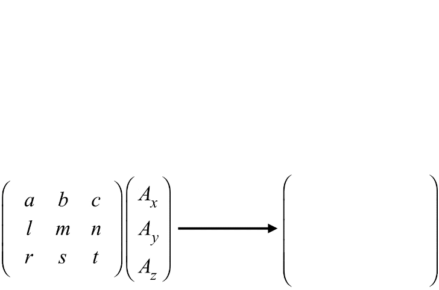

Representación matricial
Para describir y manipular las transformaciones de una manera formal, se hace uso de una notación matricial y de todas las propiedades algebráicas que brindan las matrices, ya que representan el espacio mediante números y operaciones.
Matriz
Una matriz es un conjunto bidimensional de números. Una matriz se representa por medio de una letra mayúscula (A, B, …) y sus elementos con la misma letra en minúscula (a, b, …), con un doble subíndice donde el primero indica la fila y el segundo la columna a la que pertenece.
\begin{equation} A = \begin{bmatrix} a_{11} & a_{12} & \cdots & a_{1n} \\ a_{21} & a_{22} & \cdots & a_{2n}\\ \vdots & \vdots & \ddots & \vdots\\ a_{m1} & a_{m2} & \cdots & a_{mn} \end{bmatrix} \end{equation}
Los elementos individuales de una matriz m x n se denotan a menudo aij, donde el valor máximo de i es m y el valor máximo de j es n. Siempre que la matriz tenga el mismo número de filas y de columnas que otra matriz, estas se pueden sumar o restar elemento por elemento.
Las aplicaciones que realizan transformaciones intensivamente, muchas veces en cada fotograma o múltiples transformaciones a la vez, por lo que se debe formular de forma muy eficiente toda la secuencia de transformaciones.
En el área de la graficación por computadora, es común encontrar la representación de las ecuaciones de transformación por medio de matrices, y se pueden encontrar dos tipos de notaciones para representarlas.
Vectores renglón
Una de ellas es representando las coordenadas de un punto p como vectores renglón. En 2D, una matriz de transformación M multiplica al punto por la derecha para obtener el nuevo punto p’.
\begin{equation} p = \begin{bmatrix} x, y \end{bmatrix} \end{equation}
\begin{equation} p' = \begin{bmatrix} x', y' \end{bmatrix} = Mp \end{equation}
Vectores columna
La segunda notación es representado a las coordenadas de un punto p como vectores columna, en este caso una matriz de transformación M multiplica al punto por la izquierda para obtener el nuevo punto p’.
\begin{equation} p = \begin{bmatrix} x \\ y \end{bmatrix} \end{equation}
\begin{equation} p' = \begin{bmatrix} x'\\ y' \end{bmatrix} = Mp \end{equation}
Multiplicación de matrices por vectores
Si Am x n y Bn x 1, el producto AB es e vector m x 1 cuyas columnas son ab1, …, abn en la que b1, …, bn son columnas de B. Por ejemplo:
\begin{equation} A = \begin{bmatrix} a_{11} & a_{12} \\ a_{21} & a a_{22} \end{bmatrix}, \, B = \begin{bmatrix} b_1 \\ b_2 \end{bmatrix} \end{equation}
\begin{equation} AB = \begin{bmatrix} a_{11} & a_{12} \\ a_{21} & a a_{22} \end{bmatrix} \, \begin{bmatrix} b_1 \\ b_2 \end{bmatrix} = \begin{bmatrix} a_{11}b_1 + a_{12}b_2 \\ a_{21}b_1 + a_{22}b_2 \end{bmatrix} \end{equation}
Cuando multiplicamos una matriz por un vector, es necesario que el número de filas del vector coincida con el número de columnas de la matriz. Si no es así, la multiplicación no está definida.

La multiplicación entre matrices sigue el mismo principio.

La multiplicación de matrices no es asociativa, es decir, el orden de los factores sí altera el producto. Para llevar a cabo la multiplicación consecutiva correctamente, las matrices deben multiplicarse de derecha a izquierda.